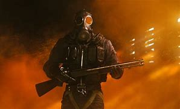

Esport

History
Early history (1972–1989)
The earliest known video game competition took place on 19 October 1972 at Stanford University for the game
Spacewar. Stanford students were invited to an "Intergalactic spacewar olympics" whose grand prize was a year's
subscription for Rolling Stone, with Bruce Baumgart winning the five-man-free-for-all tournament and Tovar and
Robert E. Maas winning the team competition.
Továbi linkek
Aloldal
Másik